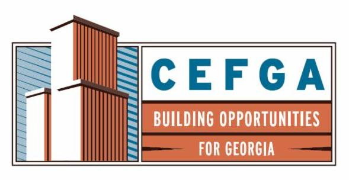
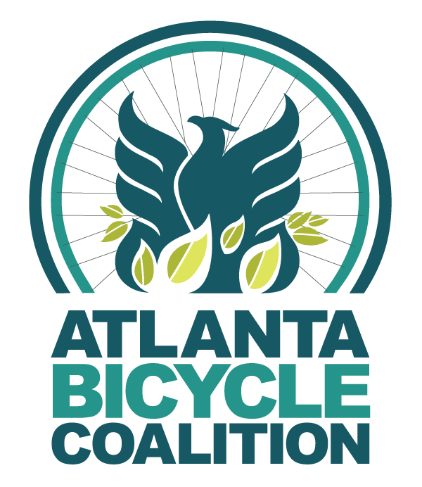
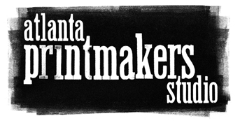
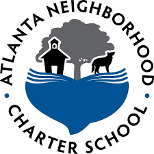
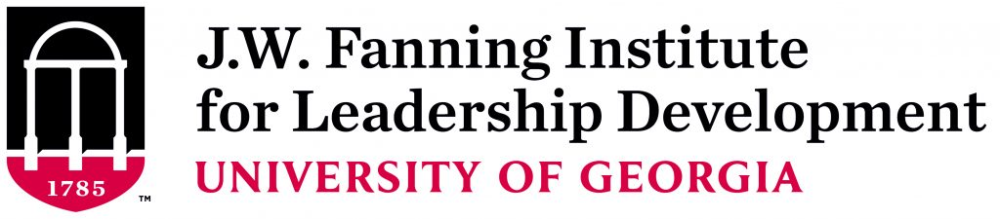
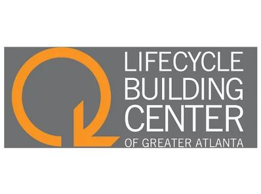
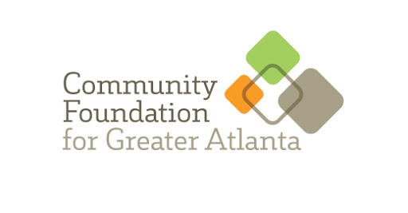
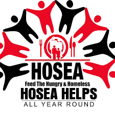
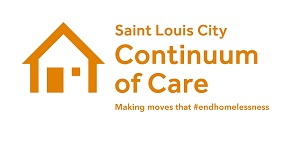
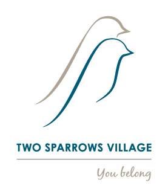

“Erik worked with us to develop an approach that fit our needs and capacity. He was focused on ensuring we got what we needed out of the process. Along the way he has connected us with many prospective partners and become a strong advocate for the Atlanta Land Trust.”
Amanda Rhein
“It’s said that many strategic plans end up on a shelf, collecting dust. That was not the case at all with our strategic plan, led and developed by Speakman Consulting. We set a specific, three-year goal to grow our organization and our impact to at least $4 Million in annual revenue. That seemed like an insurmountable goal at the time, when we were a $500,000 organization. Thanks in large part to Erik’s facilitation and follow-up, we achieved that goal and so much more. Erik is wise, experienced and patient with people; a great facilitator; someone I highly recommend for any organization seeking to update or develop from scratch an ambitious strategic plan.”
Scott Shelar
“As a board member of the Metro Atlanta Area Command of the Salvation Army, it was my pleasure to work closely with Speakman Consulting in the development of a three and five Strategic Plan for our organization. We found Erik to be engaged and committed to learn about the Salvation Army and our mission. As such his guidance was invaluable in leading us to a Strategic Plan that will vastly improve and increase the services we offer our clients in the Atlanta Area”
Tony Burger, Salvation Army, Metro Atlanta Command, Advisory Board Member and Chair of the Strategic Planning Committee


 




 